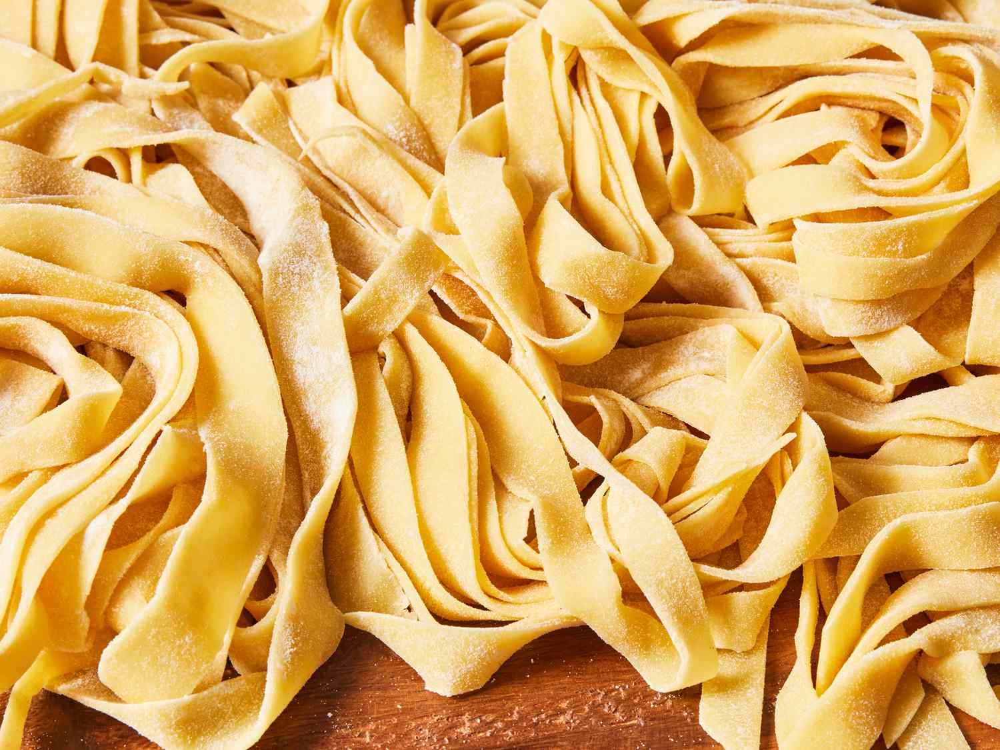

Pasta

Why buy the boxed stuff when you can make noodles at home?
This homemade pasta recipe is way better than what you can buy at the store — and it’s surprisingly easy to throw together with just five ingredients you likely already have on hand!
Ingredients:
- 2 cups flour
- 3 large eggs, at room temperature
- 2 tablespoons olive oil
- 1 teaspoon salt
- 2 tablespoons water, or as needed
Steps:
- Mix flour, eggs, olive oil, and salt in a bowl until combined. Add water, 1 teaspoon at a time, to flour mixture until a smooth, thick dough forms.
- Turn dough out onto a lightly floured work surface and knead for 10 minutes. Let dough rest for 5 to 10 minutes.
- Divide dough into 8 balls; use a pasta machine to roll and cut dough into desired pasta shape.